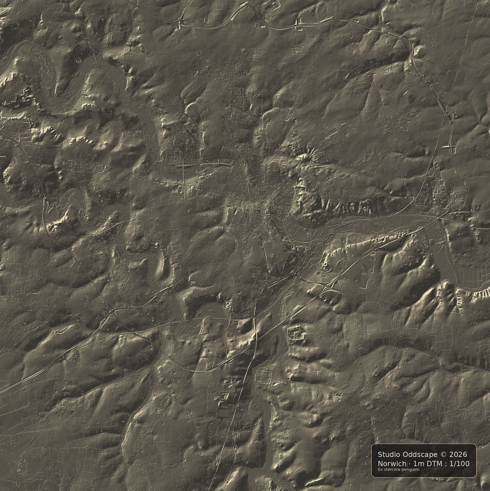
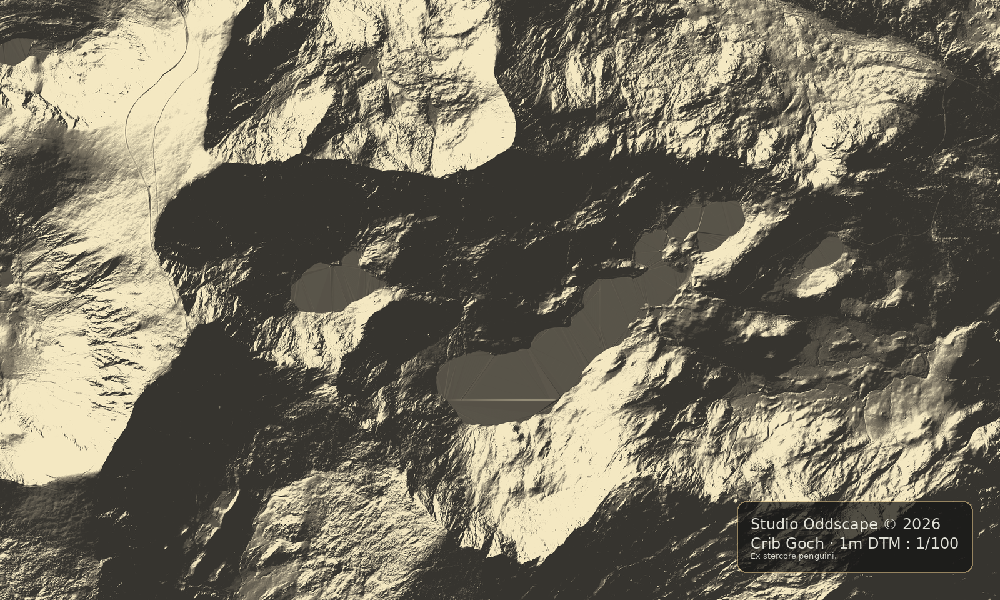
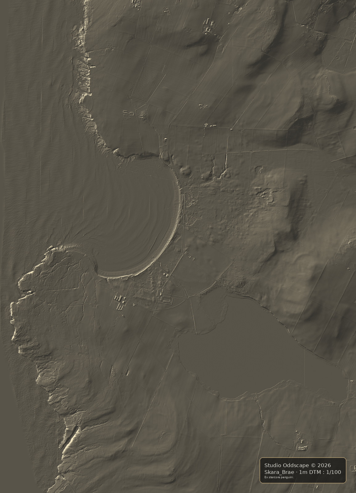

Orford Ness
Coastal terrain, shingle systems and shifting landform interpretation.

Sutton Hoo
Terrain study exploring the archaeological ridge, River Deben estuary and wider landscape setting of one of Britain's most significant heritage sites.

NS93 / Tinto
Upland terrain study exploring elevation, ridge form and sculptural mass.

Norwich Central
Terrain study exploring Norwich's historic urban topography, river valley setting and hidden landform structure through LiDAR-derived hillshade and relief interpretation.

Eryri • Llyn Llydaw & Crib Goch
Terrain study exploring the relationship between Crib Goch, Llyn Llydaw and the glacial landscape of Yr Wyddfa, revealing the mountain as a connected system of ridge, lake and valley.

Skara Brae
Terrain study exploring Skara Brae, Skaill Bay and the surrounding coastal landscape. High-resolution LiDAR reveals subtle archaeological features, cliff systems and landform relationships within one of Europe's most significant Neolithic settings.